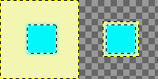

|

|
 |
| 7.55. Redimensionar camada |

|
7.57. Crop Layers to Content |
The command resizes the selected layers to the boundary of the selection by removing any strips at the edge whose contents are all completely unselected. Areas which are partially selected (for example, by feathering) are not resized.
If there is no selection, this menu entry is disabled.
Figura 16.120. Applying “Resize Layers to Selection”

À esquerda: antes de aplicar o comando, a camada tem uma seleção que tem bordas enevoadas.
À direita: após aplicar o comando, os pixels não transparentes não são cortados, mesmo que sejam apenas semi-transparentes.